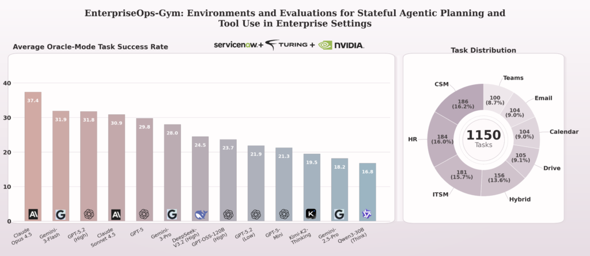

ICML 2026Enterprise
EnterpriseOps-Gym: Environments and Evaluations for Stateful Agentic Planning and Tool Use in Enterprise Settings
Are agents ready for real enterprise work? A large, realistic stateful environment for long-horizon planning and tool execution under real enterprise constraints, now tracked on the Artificial Analysis leaderboard.